دليل استخدام نظام Aura Tac
لإدارة مراكز صيانة الأسلحة
شرح كامل لكل شاشة في النظام — إيه وظيفتها، مين يقدر يفتحها، اللي بيظهر عليها، والإجراءات المتاحة — مرتّبة على دورة العمل الحقيقية من استقبال القطعة حتى تسليمها.
نظرة عامة على النظام
Aura Tac نظام سحابي متكامل لإدارة مركز صيانة الأسلحة: بيتابع القطعة من لحظة استقبالها، مروراً بعمل الفني وفحص الجودة، حتى التسليم النهائي بالتحقق والفاتورة الضريبية — وكل خطوة مربوطة بصلاحيات وإشعارات ورسائل واتساب للعميل.
الفكرة باختصار
- كل قطعة ليها كرت إلكتروني برقم وباركود بيتحرّك بين مراحل العمل.
- كل دور وظيفي بيشوف ويعمل حاجات محددة بصلاحياته فقط.
- الحسابات المالية (أجور + قطع + ضريبة 15%) بتتحسب تلقائياً.
- تأكيد هوية العميل عند الاستلام والتسليم بـ كود OTP على واتساب.
الأدوار الأربعة
- المدير — صلاحية كاملة على كل شيء + الإعدادات والتقارير.
- الاستقبال — العملاء والأصناف وفتح الكروت.
- الفني — تنفيذ الصيانة وتسجيل جلسات العمل.
- الجودة — مراجعة الكروت واعتمادها والتسليم.
دورة حياة كرت الصيانة
كل كرت بيمرّ بـ 6 حالات. الحالة بتتغيّر تلقائياً مع كل خطوة، وبتتحكّم في مين يشوف الكرت وفين.
اتفتح الكرت في الاستقبال وبيستنى فني يبدأ فيه.
الفني سجّل أول جلسة عمل — الكرت شغّال دلوقتي.
إيقاف مؤقت لحين توفّر قطعة غيار (اختياري).
الفني خلّص وبعت الكرت لمشرف الجودة.
الجودة اعتمدت الكرت — جاهز يتسلّم للعميل.
اتسلّم بالتحقق وسُجّلت الفاتورة — الكرت مؤرشف.
الأدوار والصلاحيات
النظام بيتحكّم في الوصول على مستويين: إخفاء العناصر من القائمة الجانبية، ومنع فتح الصفحة بالرابط المباشر (403). المدير بيعدّي على كل حاجة تلقائياً.
المدير العام
manager- كل الشاشات والصلاحيات
- الموظفين والأدوار
- الإعدادات والتقارير المالية
موظف الاستقبال
reception- العملاء والأصناف
- فتح كروت + الاستقبال السريع
- البحث الشامل
فني الصيانة
technician- كروت الصيانة (عرض)
- لوحة الفنيين
- تسجيل جلسات العمل
مشرف الجودة
qa- كروت الصيانة (عرض)
- فحص الجودة
- التسليم والاستلام
مصفوفة الوصول للصفحات
| الصفحة | المدير | الاستقبال | الفني | الجودة |
|---|---|---|---|---|
| لوحة التحكم dashboard | ✓ | ✓ | ✓ | ✓ |
| العملاء customers.view | ✓ | ✓ | ✗ | ✗ |
| سجل الأصناف items.view | ✓ | ✓ | ✗ | ✗ |
| كروت الصيانة maintenance.view | ✓ | ✓ | ✓ | ✓ |
| الاستقبال السريع maintenance.create | ✓ | ✓ | ✗ | ✗ |
| لوحة الفنيين maintenance.tech_panel | ✓ | ✗ | ✓ | ✗ |
| فحص الجودة + التسليم maintenance.qa_delivery | ✓ | ✗ | ✗ | ✓ |
| البحث الشامل reports.view | ✓ | ✓ | ✗ | ✗ |
| الديون + التقارير المالية financials.view | ✓ | ✗ | ✗ | ✗ |
| الموظفين + الأدوار + الإعدادات staff.manage | ✓ | ✗ | ✗ | ✗ |
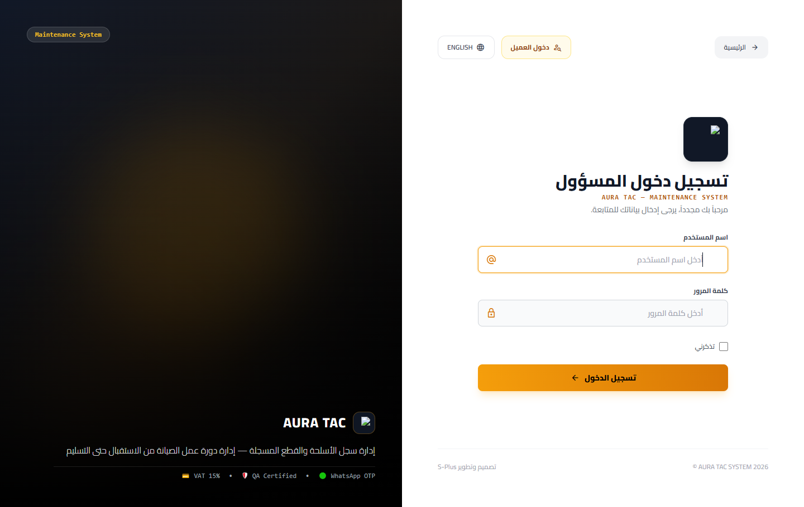
تسجيل الدخول
دخول الموظفين للنظام على خطوتين: اسم المستخدم وكلمة المرور، بعدين كود التحقق.
الخطوات
- الخطوة 1: اكتب اسم المستخدم وكلمة المرور واضغط دخول.
- الخطوة 2: اكتب كود التحقق المكوّن من 6 أرقام واضغط تأكيد.
- فيه اختيار «تذكّرني»، وتبديل اللغة عربي/إنجليزي، ورابط للبورتال.
ملاحظات مهمة
- كود التحقق حالياً ثابت ولا يُرسَل فعلياً (حسب طلب العميل مؤقتاً).
- الحساب الأول هو المدير باسم admin.
- غيّر كلمة المرور بعد أول دخول من صفحة الملف الشخصي.
بيانات الدخول الافتراضية (بيئة التجربة)
مدير
استقبال
فني
جودة
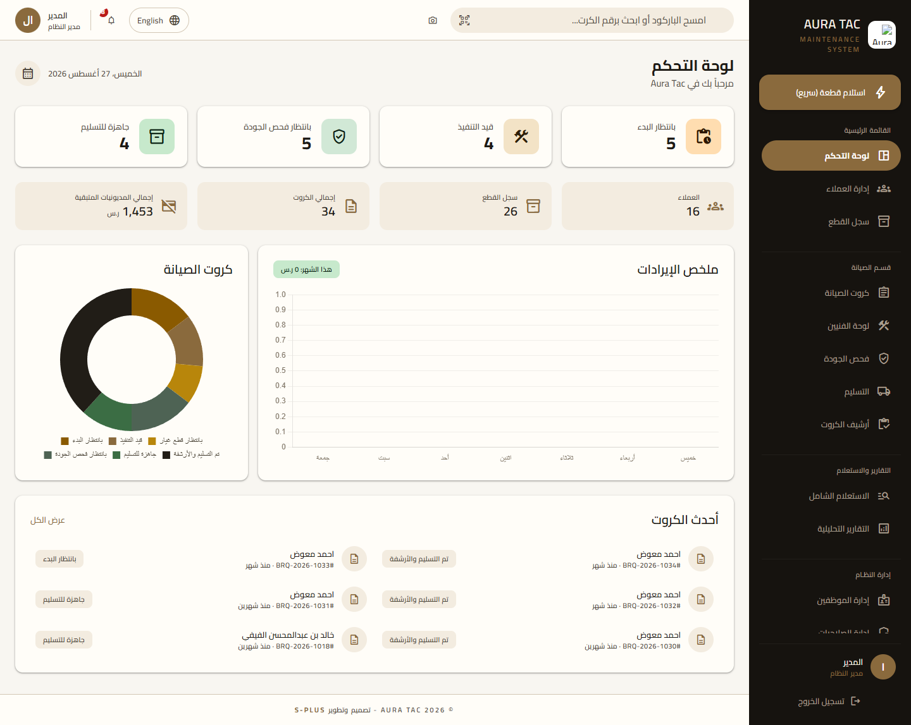
لوحة التحكم
شاشة البداية بعد الدخول — بتدّيك صورة سريعة عن حالة الشغل: عدّادات المراحل، مؤشرات الأداء، الإيراد، وآخر الكروت.
اللي بيظهر على الشاشة
- 4 عدّادات: بانتظار البدء، قيد التنفيذ، بانتظار الجودة، جاهز.
- 4 بطاقات مؤشرات: عدد العملاء، الأصناف، إجمالي الكروت، وإجمالي المديونيات.
- رسم بياني لإيراد آخر 7 أيام + شارة إيراد الشهر الحالي.
- رسم دائري لتوزيع الكروت حسب الحالة + آخر 6 كروت.
الإجراءات المتاحة
- اضغط أي عدّاد حالة عشان تفتح قائمة الكروت مفلترة بنفس الحالة.
- «عرض الكل» أو أي كرت يوّدّيك لقائمة كروت الصيانة.
- الشاشة للعرض فقط — مفيش إضافة أو تعديل هنا.
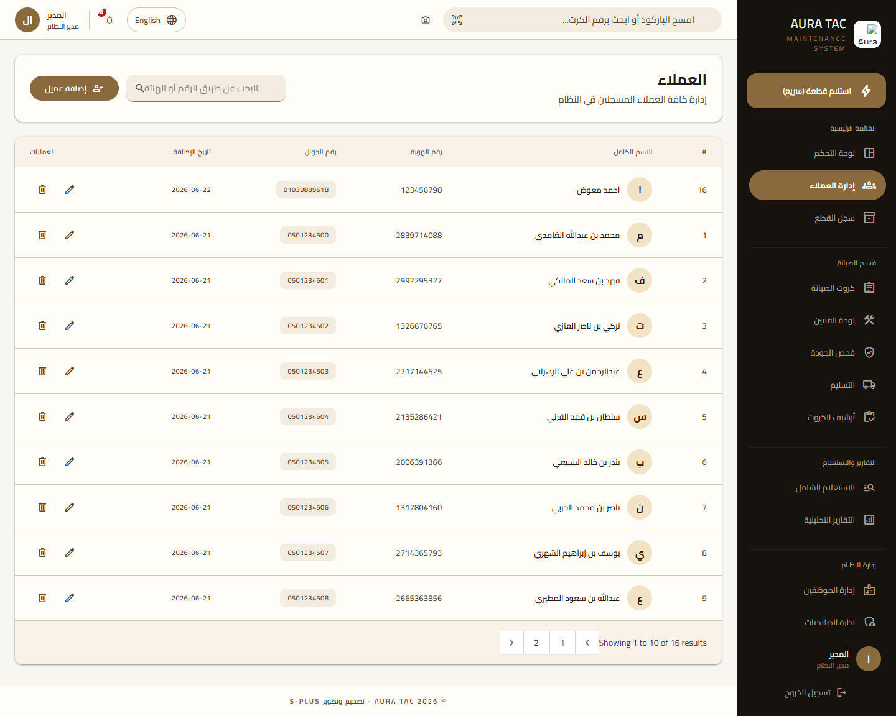
العملاء
دليل عملاء المركز — إضافة، بحث، تعديل، وحذف بيانات العملاء.
اللي بيظهر
- جدول: الاسم، الرقم القومي، الجوال، تاريخ الإضافة، والإجراءات.
- خانة بحث فورية + زر «إضافة عميل».
- تقسيم صفحات (10 لكل صفحة) ودرج جانبي للإضافة/التعديل.
الإجراءات
- بحث فوري بالاسم أو الجوال أو الرقم القومي.
- إضافة عميل جديد أو تعديل عميل قائم.
- حذف عميل (بتأكيد).
الحقول
- الاسم الكاملمطلوب — 3 أحرف على الأقل.
- الرقم القوميمطلوب — غير مكرّر.
- الجوالمطلوب — غير مكرّر.
- العنوان / ملاحظاتاختياري.
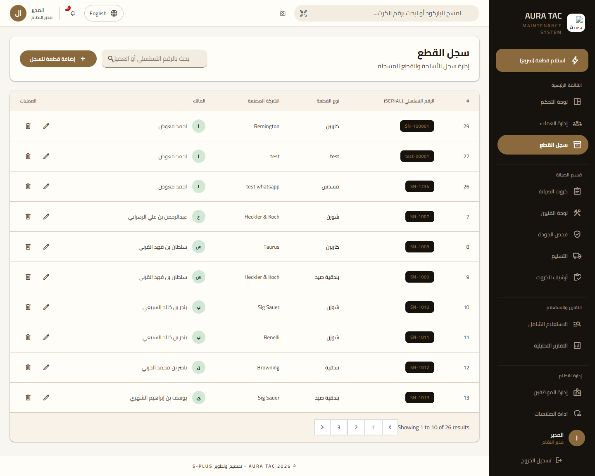
سجل الأصناف
أرشيف القطع (الأسلحة) وكل قطعة مربوطة بمالكها — إضافة، بحث، تعديل، وحذف.
اللي بيظهر
- جدول: الرقم التسلسلي، النوع، الشركة المصنّعة، المالك، والإجراءات.
- بحث فوري بالسريال أو باسم المالك.
- درج للإضافة/التعديل مع بحث فوري عن المالك.
الإجراءات
- إضافة/تعديل/حذف قطعة.
- اختيار المالك بالبحث بالاسم أو الجوال (يبدأ من حرفين).
الحقول
- المالكمطلوب — اختيار من العملاء بالبحث.
- الرقم التسلسليمطلوب — غير مكرّر.
- النوعمطلوب — مع اقتراحات (مسدس / بندقية / شوزن / رشاش).
- الشركة المصنّعةمطلوب (Glock, Beretta…).
- رقم الترخيص / المواصفاتاختياري.
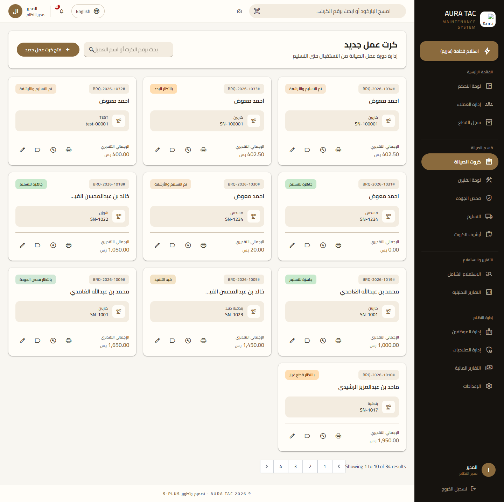
كروت الصيانة
القائمة المركزية لكل كروت العمل — فتح كرت جديد بالطريقة المفصّلة، تعديل، وطباعة المستندات.
اللي بيظهر
- بطاقات الكروت: رقم الكرت #BRQ-سنة-رقم، العميل، شارة الحالة، القطعة، والتكلفة التقديرية.
- بحث فوري + زر «فتح كرت جديد».
- درج استقبال مقسّم 3 خطوات: بيانات العميل والقطعة، طلبات الإصلاح، التكلفة.
الإجراءات
- بحث بالرقم أو اسم/جوال العميل، وفلترة بالحالة.
- فتح/تعديل/حذف كرت.
- طباعة: كرت العمل، كرت الإصلاح، الليبل (تفتح في تبويب جديد).
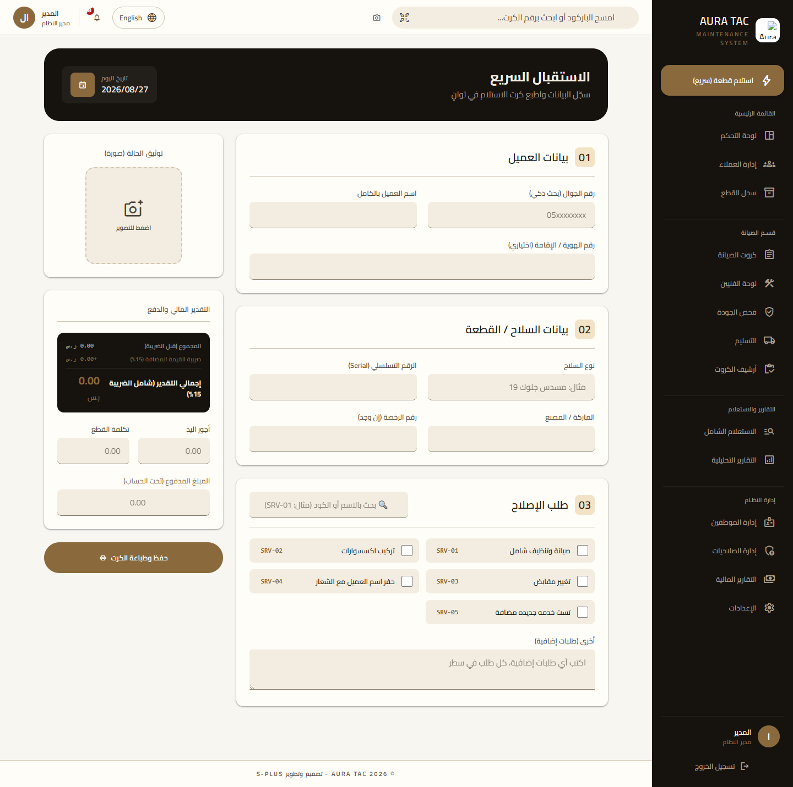
الاستقبال السريع
استقبال كامل في شاشة واحدة: بيانات العميل والسلاح والطلبات والصورة والدفع، مع تأكيد هوية العميل بكود OTP على واتساب — وينشئ العميل والقطعة والكرت مرة واحدة.
اللي بيظهر
- عمودين: بيانات العميل، بيانات السلاح، طلب الإصلاح.
- لوحة جانبية: صورة القطعة + التقدير المالي والدفع بحساب الضريبة الحيّ.
- تنبيه ملكية السريال + نافذة تحقق OTP.
الإجراءات
- كتابة الجوال تجيب العميل تلقائياً لو موجود، والسريال يجيب بيانات القطعة.
- اختيار الخدمات الرسمية + طلبات حرة + التقاط صورة.
- إدخال الأجور والقطع والمدفوع (المجموع والضريبة تلقائي).
- «حفظ وطباعة» → إرسال OTP → إدخال الكود والتأكيد.
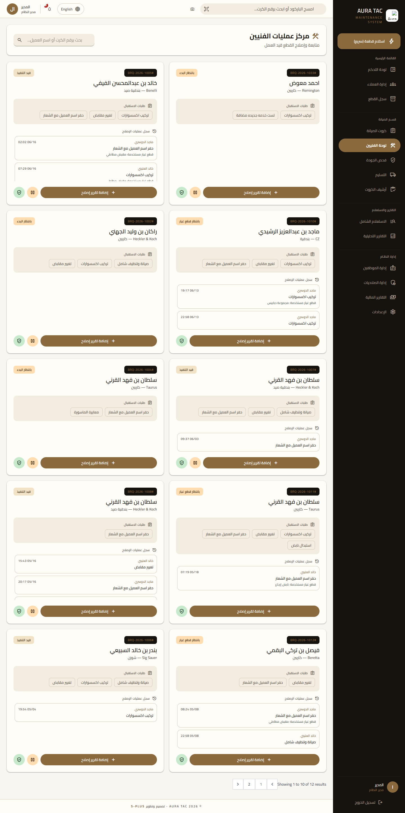
لوحة الفنيين
مركز عمل الفني: بيشوف الكروت النشطة، يسجّل جلسات الإصلاح (الشغل + القطع + الوقت)، ويحرّك الكرت لبانتظار القطع أو للجودة.
اللي بيظهر
- الكروت النشطة فقط (بانتظار البدء / قيد التنفيذ / بانتظار القطع).
- لكل كرت: طلبات الإصلاح كوسوم + سجل جلسات العمل السابقة.
- أزرار: تسجيل جلسة، بانتظار القطع، إرسال للجودة.
الإجراءات
- تسجيل جلسة إصلاح جديدة (وصف + قطع + وقت البداية والنهاية).
- وضع الكرت في «بانتظار القطع».
- «إرسال للجودة» → يبلّغ مشرف الجودة.
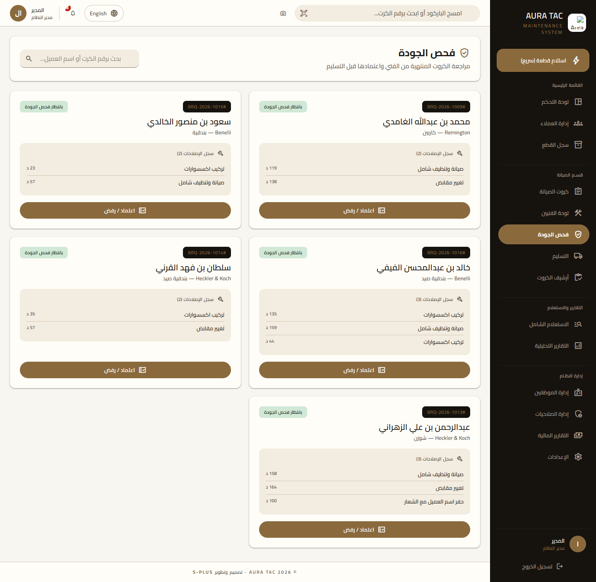
فحص الجودة
مشرف الجودة بيراجع الكروت اللي بعتها الفنيون، ويعتمدها للتسليم أو يرفضها ويرجّعها للفني — مع تسجيل الفحص.
اللي بيظهر
- الكروت في حالة «بانتظار الجودة» فقط.
- لكل كرت: سجل جلسات العمل مع مدة كل جلسة.
- نافذة فحص: مطابق / مرفوض + ملاحظات المشرف.
الإجراءات
- فتح الفحص واختيار القرار وكتابة الملاحظات.
- حفظ القرار.
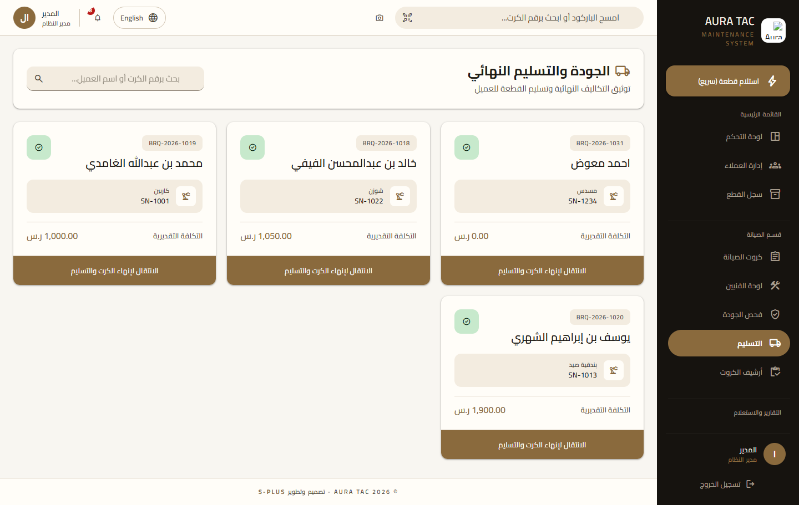
التسليم والاستلام
إنهاء الكروت المعتمدة: تحديد التكلفة النهائية، تحصيل الدفع، تأكيد هوية العميل بـ OTP، ثم التسليم والأرشفة.
اللي بيظهر
- الكروت «الجاهزة» فقط + زر «بدء التسليم».
- درج التسليم: الأجور والقطع النهائية + الضريبة والإجمالي الحيّ.
- حالة الدفع (مدفوع كامل / جزئي / غير مدفوع) + نافذة OTP.
الإجراءات
- تعديل التكلفة النهائية (يعيد حساب الضريبة والمتبقّي).
- اختيار حالة الدفع وإدخال المدفوع.
- «إنهاء التسليم» → OTP → تأكيد وأرشفة الكرت.
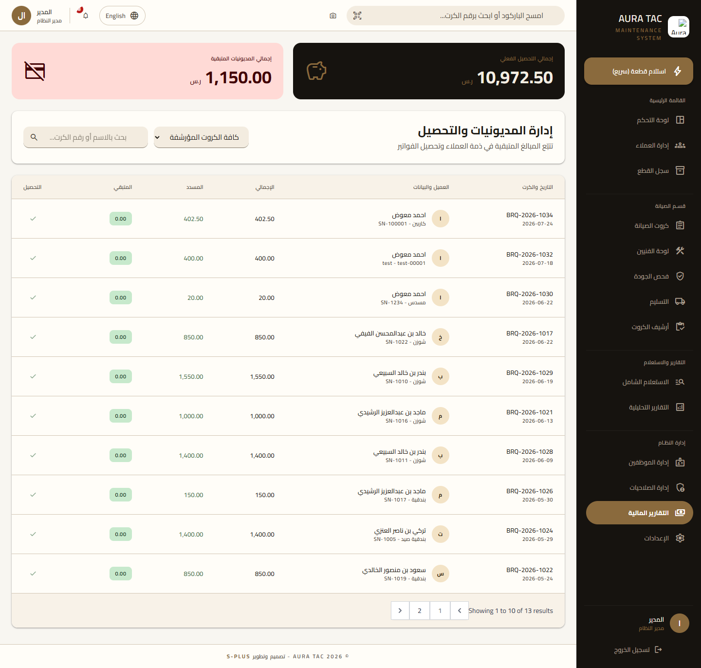
الديون والتحصيل
إدارة المتبقّي على الكروت المُسلّمة وتحصيله — وتحديد المبالغ المحصّلة بالكامل.
اللي بيظهر
- بطاقتان: إجمالي المُحصّل وإجمالي المتبقّي لكل الكروت المُسلّمة.
- جدول الكروت المُسلّمة: الإجمالي، المدفوع، المتبقّي (أحمر لو فيه دين).
الإجراءات
- فلترة: الكل / عليه دين / تم التحصيل.
- بحث باسم العميل أو رقم الكرت.
- «تحصيل المتبقّي» → يصفّر الدين ويعلّم الكرت مدفوع بالكامل.
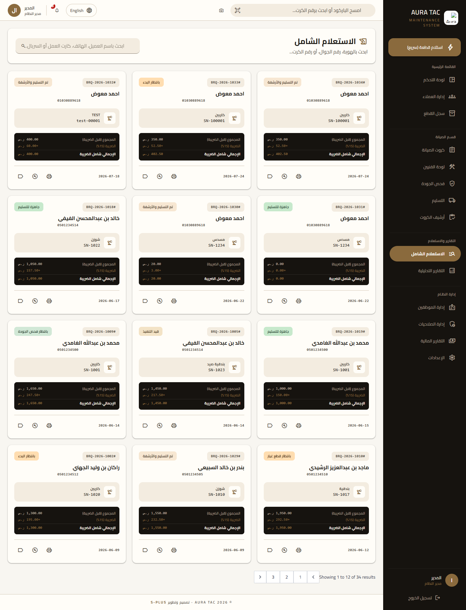
البحث الشامل
بحث في كل الكروت بأي بيانات للعميل أو القطعة، وعرض تاريخ كل كرت مع التفصيل المالي وخيارات الطباعة.
اللي بيظهر
- خانة بحث فورية + شريط بيانات العميل عند المطابقة (وعدد معاملاته).
- بطاقات الكروت: الحالة، القطعة، وتفصيل مالي (قبل الضريبة، ضريبة 15%، الإجمالي).
الإجراءات
- بحث بالاسم/الجوال/الرقم القومي/رقم الكرت/سريال القطعة.
- طباعة لكل كرت: كرت العمل، كرت الإصلاح، الليبل.
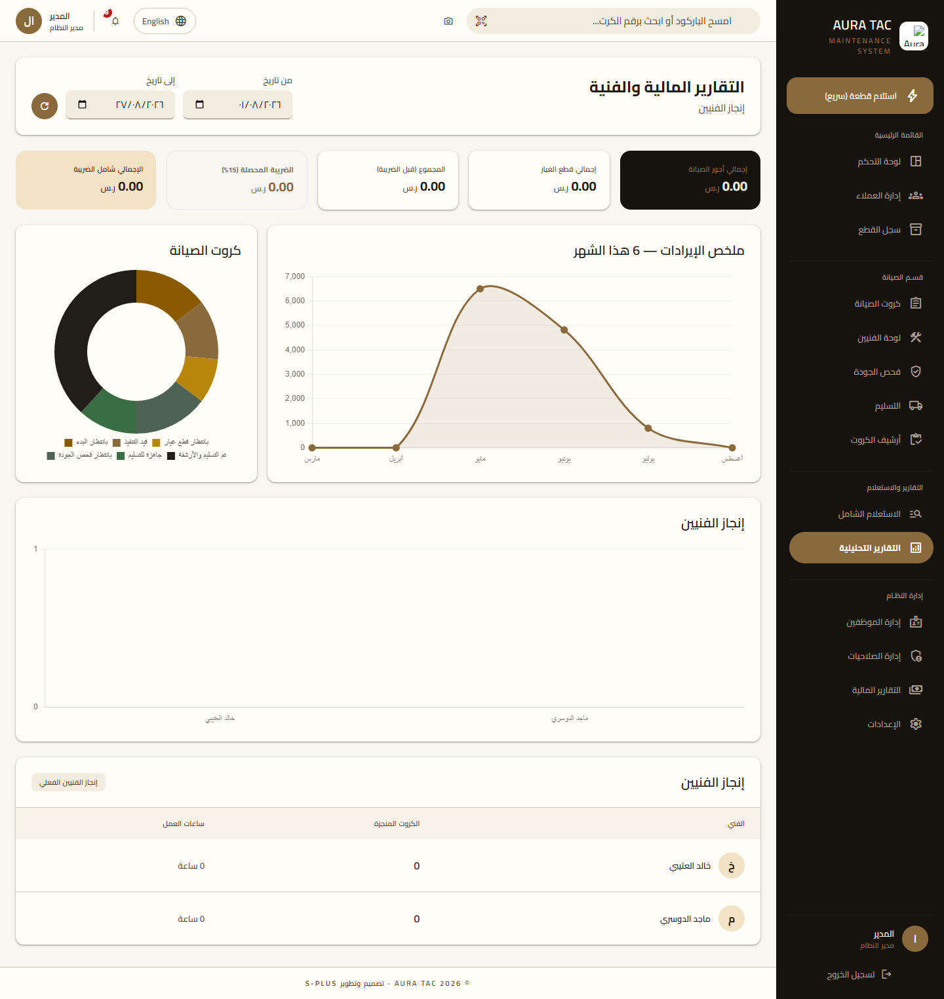
التقارير المالية
لوحة مالية وأداء الفنيين بفترة زمنية للكروت المُسلّمة — إيرادات، ضريبة، ورسوم بيانية.
اللي بيظهر
- فلتر تاريخ (من / إلى) — الافتراضي من بداية الشهر لليوم.
- 5 بطاقات: الأجور، القطع، قبل الضريبة، الضريبة المحصّلة، الإجمالي.
- رسم إيراد آخر 6 شهور + رسم الحالات + أداء الفنيين وجدولهم.
الإجراءات
- تحديد الفترة وتحديث التقرير.
- مراجعة الرسوم وجدول إنجاز الفنيين وساعات العمل.
الإشعارات
جرس الإشعارات في أعلى الشاشة — بيعرض آخر التنبيهات مع عدّاد غير مقروء، وبيوصّلك للكرت المرتبط.
اللي بيظهر
- أيقونة جرس بعدّاد غير مقروء (يعرض «+9» فوق التسعة).
- قائمة بآخر 12 إشعار مع الأيقونة والرسالة ورقم الكرت والوقت.
الإجراءات
- فتح القائمة، تعليم إشعار كمقروء (يوّدّيك للكرت)، أو «تعليم الكل كمقروء».
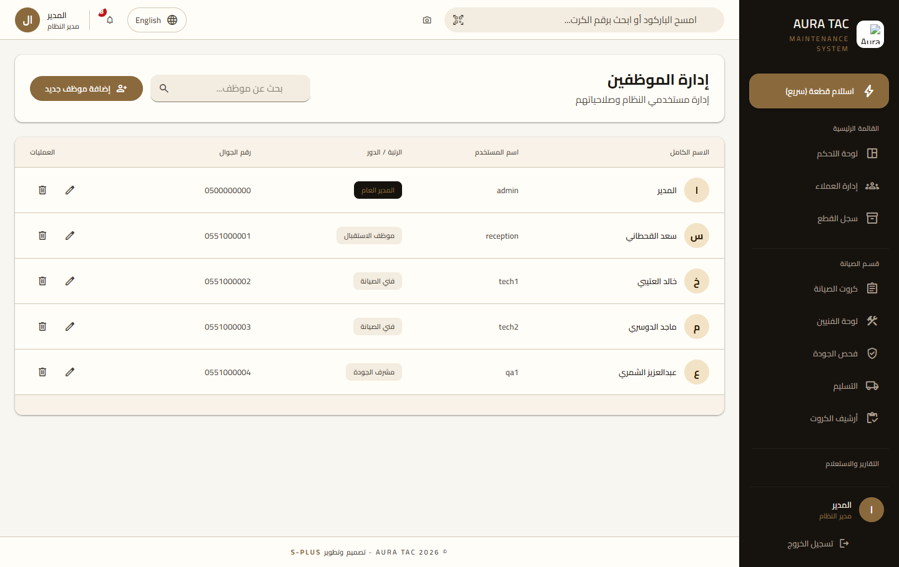
إدارة الموظفين
قائمة مستخدمي النظام — إضافة، تعديل، بحث، وحذف الحسابات وتعيين الدور لكل موظف.
اللي بيظهر
- جدول: الاسم، اسم المستخدم، الدور (كوسم)، الجوال، والإجراءات.
- درج جانبي للإضافة/التعديل.
الإجراءات
- بحث بالاسم أو اسم المستخدم.
- إضافة/تعديل/حذف موظف (مينفعش تحذف نفسك).
- عند التعديل: سيب كلمة المرور فاضية للإبقاء عليها.
الحقول
- الاسممطلوب.
- اسم المستخدممطلوب — غير مكرّر.
- الدوراستقبال / فني / جودة / مدير.
- كلمة المرور6 أحرف على الأقل عند الإنشاء.
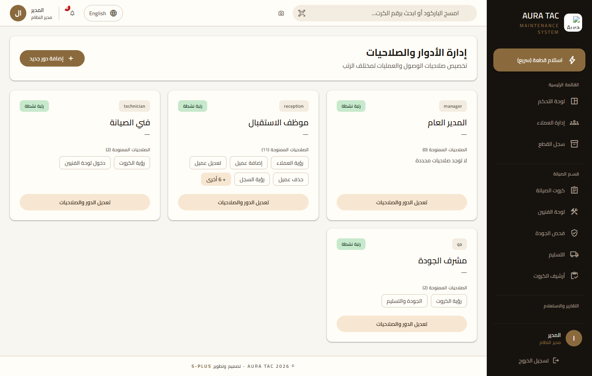
الأدوار والصلاحيات
إنشاء وتعديل الأدوار والتحكّم في صلاحيات كل دور بالتحديد — من غير أي تعديل على الكود.
اللي بيظهر
- بطاقات الأدوار: الكود، الاسم، الوصف، والصلاحيات الممنوحة.
- نافذة تعديل بها الصلاحيات مجمّعة حسب القسم (اختيار متعدد).
الإجراءات
- إضافة دور جديد أو تعديل دور قائم.
- تفعيل/إلغاء أي صلاحية للدور وحفظها.
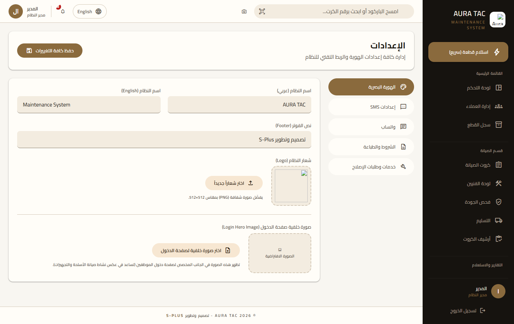
الإعدادات
مركز إعدادات النظام: الهوية والعلامة، الرسائل، ربط واتساب، نصوص الطباعة، وقائمة خدمات الصيانة الرسمية.
التبويبات
- الهوية والعلامةاسم النظام (عربي/إنجليزي)، نص الفوتر، شعار النظام، وخلفية صفحة الدخول.
- إعدادات SMSوضع تجريبي/فعلي، بيانات Twilio، وأداة إرسال تجريبي.
- إعدادات واتسابربط Evolution API، تجربة إرسال، لوحة الاتصال وكود QR، وسجل آخر الرسائل.
- الشروط والطباعةنص الشروط والأحكام المطبوع على المستندات.
- خدمات الصيانةإضافة/تعديل/حذف الخدمات الرسمية (كود + اسم) — للمدير.
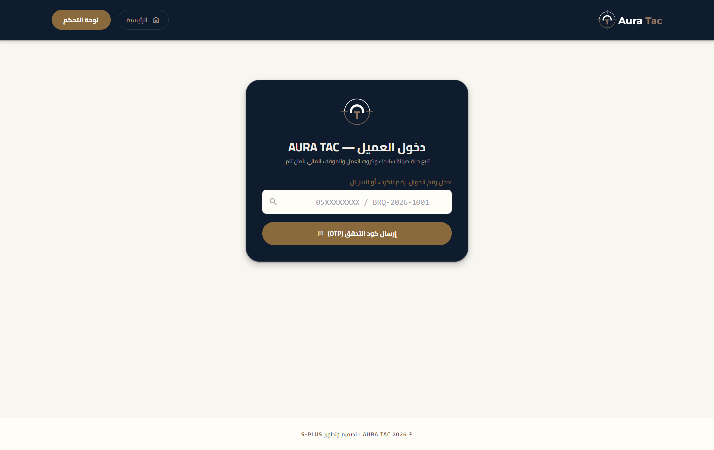
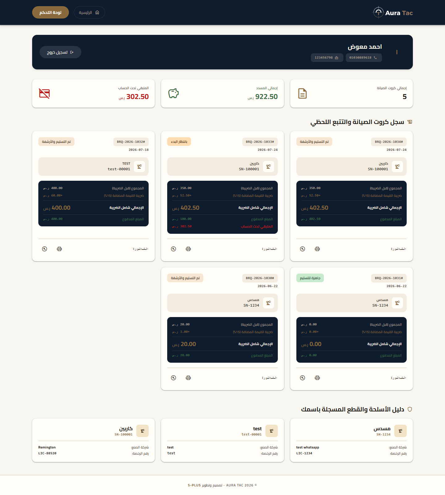
بورتال العميل
واجهة عامة يقدر العميل من خلالها يستعلم عن قطعه بنفسه، يتحقّق بكود OTP على واتساب، ويشوف كروته وموقفه المالي وأسلحته المسجّلة.
اللي بيظهر
- شاشة الدخول: بحث + خطوتين (طلب الكود → إدخاله).
- لوحة العميل: بياناته، 3 مؤشرات (عدد الكروت، المدفوع، المتبقّي)، كروته، وأسلحته.
الإجراءات
- البحث بالجوال/الرقم القومي/رقم الكرت/السريال وطلب الكود.
- إدخال الكود والتحقق، وإعادة الإرسال.
- عرض حالة كل كرت وتفصيله المالي وطباعة كرت العمل والإصلاح.
تصميم وتطوير S-PLUS